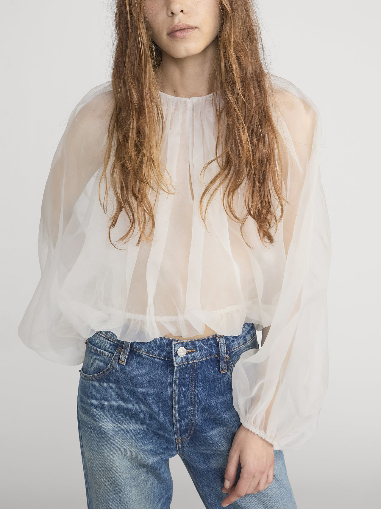
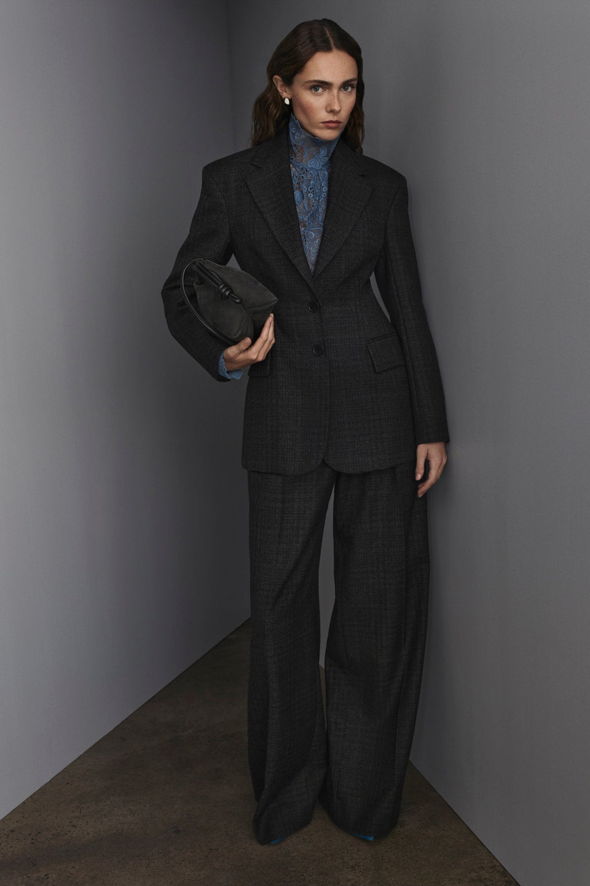
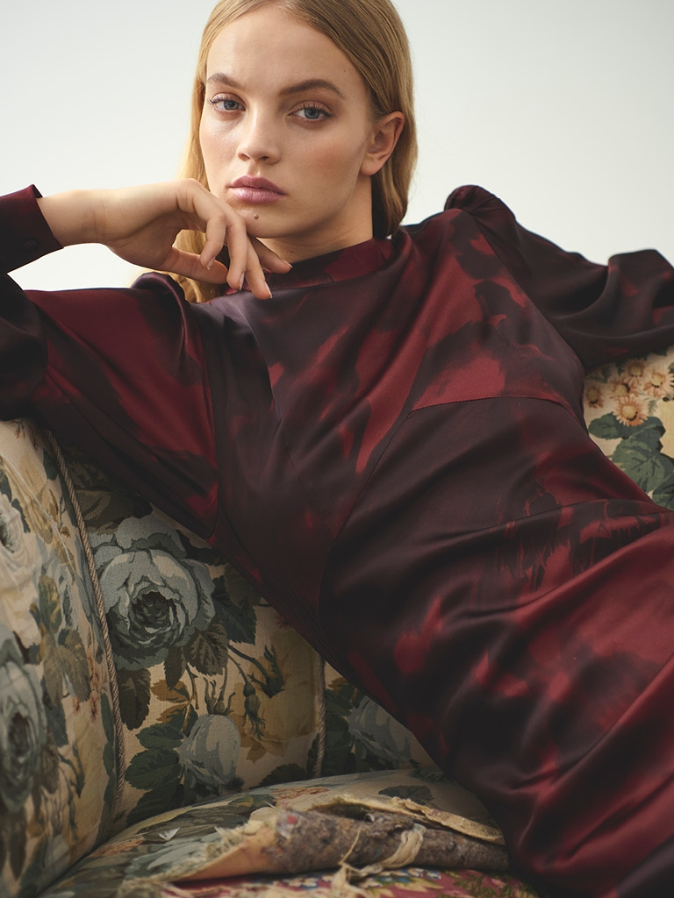
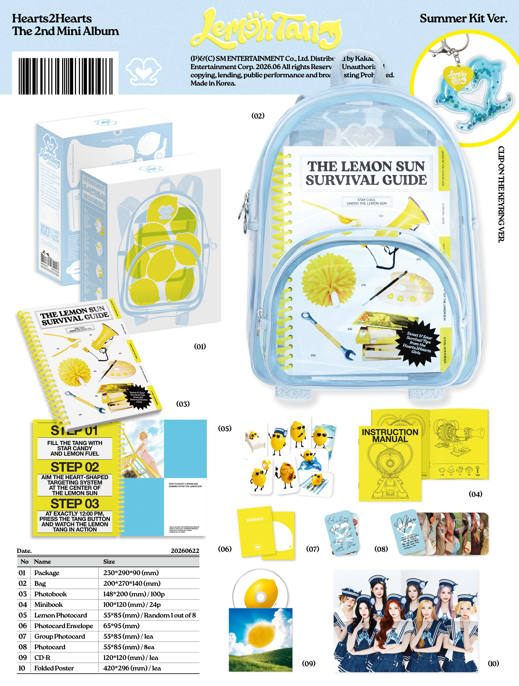

SM defines Hearts2Hearts through sincere emotion, a mysterious and beautiful musical world, and the ambition to connect with fans as a larger “us.”
SM ENTERTAINMENT · 4Q24 CEO MESSAGE ↗
PROPOSED NEXT CHAPTER · CREATIVE VISUAL CASE STUDY
MARGIN
A visual system for eight people who understand one another before the sentence is finished.
SHARED LANGUAGEPRIVATE SIGNALSMUTUAL RECOGNITION
H2H / 03
ALBUM + JACKET + STYLE + PACKAGE + PROMOTION
00
THE PROPOSAL IN ONE DECISION
Do not add another symbol.
Direct the space between them.
Hearts2Hearts has already moved from choice and first connection toward confidence, group chemistry and togetherness. The next useful question is not “How do eight members become close?” It is “What can eight people communicate without explaining?”
MARGIN turns that question into one production rule: every image must show information passing from one member to another through gaze, gesture, distance or a shared object.
01 / ARTIST READ
Evidence before aesthetics.
Official definitions, released formats and member interviews establish the creative brief. The narrative arc below is a working interpretation—not an official SM storyline.
In a 2026 interview, Ye-on described eight members as a source of more formations, storytelling options and stage interaction.
NME · THE COVER ↗FOCUS used three photobook versions and eight member smart-album covers; Lemon Tang expanded into photobook, jewel, keyring, sticker and summer-kit formats.
SMTOWN GLOBAL · H2H COLLECTION ↗WORKING NARRATIVE READ
Each release widens “connection” without losing youth, emotion or group identity.
- 01CHOICEThe Chase
- 02FRIENDSHIPButterflies
- 03SELF-EXPRESSIONSTYLE
- 04ATTENTIONFOCUS
- 05ATTITUDERUDE!
- 06TOGETHERNESSLemon Tang
- 07RECOGNITIONMARGIN / proposal
“Even if we don’t say it out loud, we know if another person is not feeling well.”
IAN · NME, 202602 / EIGHT AS ONE
One artist.
Eight visual functions.
This is a creative-direction read, not an official position chart. Each member is given a distinct image function while the group remains the main subject.
8 → 4+4 → 3+3+2 → 2×4 → 1×8

01 / JIWOOCOMPOSURE
Group anchor. Stable eye-line and central framing hold complex formations together.

02 / CARMENWARMTH
Emotional entry point. Close framing and tactile styling give the system human weight.

03 / YUHACONNECTION
Relational center. Best used where gesture passes cleanly between two units.

04 / STELLAVOICE
Verbal character. Spoken detail and direct address give promotional assets personality.

05 / JUUNMOVEMENT
Kinetic author. Choreography experiments translate into repeated gesture and motion trace.

06 / A-NAADAPTATION
Performance switch. A controlled change in expression can turn the same frame from soft to sharp.

07 / IANINSTINCT
Readable impulse. Quick reaction and off-axis gaze make the shared signal feel unplanned.

08 / YE-ONCLARITY
Story logic. Precise placement makes a dense eight-member composition easy to read.
PORTRAIT REFERENCES · NME / WONYOUNG KI, 2026. Used only to study member distinction and composition.
03 / ALBUM ARCHITECTURE
Sound leaves room
for a reply.
A hypothetical six-track mini album. The sonic language stays youthful and melodic, but introduces silence, clipped rhythm and voice fragments as space for member-to-member response.
3RD MINI ALBUM / PROPOSAL
MARGIN
Graphite synth-pop, dry vocal proximity and elastic UK garage. The title track is built around a call that another member completes.
- 01MARGINTITLE · 03:04Negative space / call-and-response / interrupted line
- 02SAY LESS02:48Clipped R&B / close framing / mouth & hand detail
- 03GESTURE02:56Syncopated pop / movement relay / 2×4 formation
- 04PARALLEL PLAY03:124+4 unit / mirrored action / separate rooms
- 05AFTERIMAGE03:20Dream pop / shutter trace / repeated silhouette
- 06WITHOUT ASKING03:06Warm close / full eight / one continuous take
SOUNDDry, close vocal
→ 85mm portrait, no visible set edge
RHYTHMSkipped downbeat
→ one empty position inside a formation
TEXTUREGraphite synth
→ charcoal tailoring, silver pencil marks
HOOKVoice passed across members
→ gesture relay from frame to frame
04 / KEY VISUAL
The group is the hero.
The wordmark never replaces the members. It sits in the margin, while a single berry rule shows where a signal crosses from one person to another.
HEARTS2HEARTSTHE 3RD MINI ALBUM / PROPOSAL
ONE RULE The berry line must connect two bodies, gestures or eye-lines. It cannot float as decoration.
REFERENCE STATUS Editorial images prototype crop and layout only. Final output requires a commissioned jacket shoot.
05 / JACKET DIRECTION
Three versions.
One relationship system.
Version changes are built from camera distance and member arrangement—not unrelated concepts. All three must still read as MARGIN when placed side by side.

WHITE MARGIN
All eight in one shallow room. Ivory layers share one long shadow; the only accent is a berry seam crossing two members.
- 50mm / eye level
- Soft directional light
- 8 → 4+4 master frames
BORROWED SIGNAL
Four pair stories. Each member carries one detail borrowed from the previous member: ribbon, cuff, note or ring.
- 85mm portrait + 35mm unit
- Direct flash / low fill
- Pair → 2×4 sequence
AFTERIMAGE
Individual movement is recorded as a trace that enters the next portrait. Eight pages form one continuous gesture.
- 50mm / 1⁄8 shutter
- Edge light + black flag
- 1×8 continuous edit
ART DIRECTOR DESK
Make a shoot decision,
not a mood-board choice.
Three practical inputs produce one usable call-sheet direction. This is the only production interaction retained in v5.
LIVE PRODUCTION BRIEF
GROUP 850MM / BALANCEDSOFT / DIRECTIONAL
Keep all eight inside one frame. Build two connected eye-lines, one empty interval and a single shared object. Shoot the clean master before unit variations.
06 / STYLING + HMU
Difference through material,
not member colors.
No eight-color assignment. Individuality comes from proportion, surface and movement while the palette stays group-first: paper ivory, graphite and washed berry.

01REFERENCE · FRAME
PAPER / AIR
Sheer organza, crushed cotton and thin knit. Volume moves before the body, making gesture visible.
SOURCE ↗
02REFERENCE · SCANLAN THEODORE
GRAPHITE / LINE
Clean tailoring, long trouser break and narrow knits. Silhouette creates the group rhythm.
SOURCE ↗
03REFERENCE · GESTUZ
BERRY / REFLECTION
Satin appears only on two or three members per frame. It catches and passes light like a signal.
SOURCE ↗HMU RULE
One face, one interruption.
SKINNatural satin
No uniform glass skin. Keep texture at close distance.
EYEGraphite inner line
Placement varies; color does not.
LIPMuted berry stain
Built up only for the B version.
HAIROne displaced detail
Loose strand, off-center part or borrowed pin.
07 / PHYSICAL ALBUM
The package completes
the relationship.
Current Hearts2Hearts releases already support large-format kits, member smart albums and multiple photobook versions. MARGIN keeps that commercial range but gives every format the same relational logic.

CURRENT ECOSYSTEM ANCHORLemon Tang
Lemon Tang
Summer Kit
Large-format box, 100p photobook, mini book and a complete eight-card set establish physical scale and collectability.
OFFICIAL PRODUCT SOURCE ↗MARGINH2HPRIVATE
LANGUAGE
LANGUAGE
0102030405060708
MARGIN
H2H / 03
H2H / 03
PROPOSED MAIN FORMAT
Shared Edition
A graphite slipcase holds an ivory photobook. Eight translucent portrait leaves only reveal the complete berry line when stacked in member order.
SHARED EDITION
92p photobook · CD · 8 translucent leaves · group card · signal strip
Team identity firstPAIR FOLIO ×4
Four 24p folios · pair poster · shared-object card · random 1 of 4
Collect by relationshipMARGIN MARK
NFC card · reusable transparent ruler · 1 of 8 member inserts
Small, useful, recognizable08 / PROMOTION
Reveal the language,
not the answer.
The rollout teaches fans how MARGIN works: first the empty space, then the gestures, then the relationships, and only at the end the full group image.
- D−21THE EMPTY FRAME
Eight seats, one missing interval. No member reveal.
POSTER / MOTION 6s - D−14GESTURE FILES
Eight hand and eye-line details; audio carries the unfinished hook.
8 VERTICAL CLIPS - D−10PAIR RELAY
Four unit films pass one object across separate rooms.
4 × 15s FILMS - D−07JACKET DROP
White Margin → Borrowed Signal → Afterimage.
3 IMAGE SETS - D−03MARGIN LINE
Fans choose two members and receive one shared-direction prompt.
WEB / STORY TOOL - D+01ONE-TAKE EIGHT
The final performance film resolves every gesture in one frame.
PERFORMANCE FILM
PROMOTION PROTOTYPE / PAIR RELAY
Choose two signals.
One small interaction demonstrates the campaign idea. It does not block the portfolio, hide content or turn review into a scavenger hunt.
WAITING FOR 02 SIGNALS
SELECT A PAIR
The production prompt will appear here.
09 / FINAL EDIT
What the recruiter
should remember.
v5 removes the mechanics that competed with the work and keeps the interactions that expose a Creative Visual decision.
KEEP / STRENGTHEN
- Evidence-led artist narrative
- Group-first key visual
- Actionable jacket direction
- Material-based styling system
- Commercial package architecture
- One production tool + one promotion prototype
CUT / REDUCE
- Hidden eight-signal scavenger hunt
- Progress HUD and locked final cover
- Multiple labs that repeat the same proof
- Decorative gamer copy
- Long speculative Korean prose
- Uncredited or off-concept imagery
FINAL CREATIVE THESIS
Hearts2Hearts does not need a louder symbol. It needs an image system that makes eight people’s shared understanding visible.